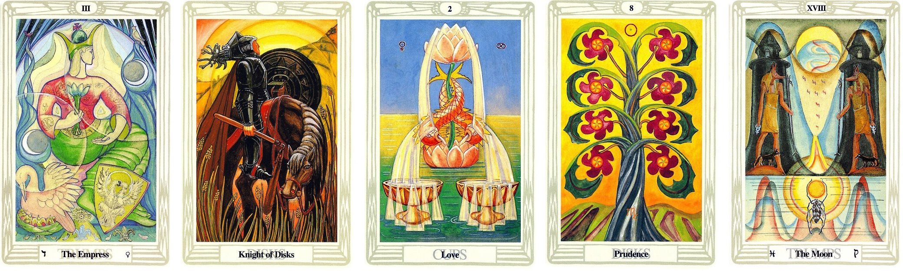
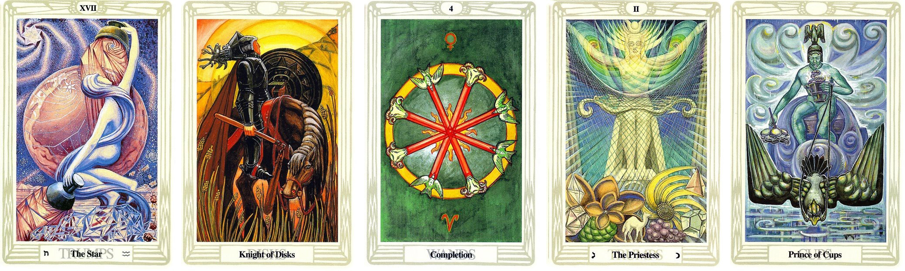
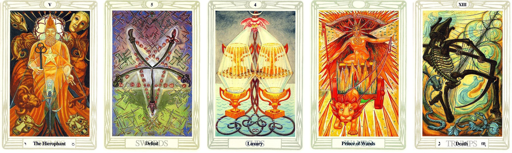

問題：詢問學習八字狀況會如何

抽出來的牌面順序：
皇后 圓盤騎士 聖杯二 圓盤八 月亮
解牌分析
整體牌面主動性、積極性較弱，必須多加注意
第一張牌
在過往 你有豐富的資源可以學習 但那時你只是看看 知道這些東西 但沒有太大的動作 而且這狀況持續了一段時間 因為那時你並沒有看到你現在想學的東西
第二張牌
因為一個機緣一個契機 讓你開始想學習這個知識 你也知道這會是一條很漫長的路 你不會急於求成 反而會是一步一步穩紮穩打的學習 學習的資源是有的 你也知道自己的目標在哪 但還沒有辦法真正靜下心來 因為容易迷惘
第三張牌
而你現在的狀況 可以讓自己靜下心來好好學習 資源有了 目標有了 衝勁也來了 但是這股衝勁不是剛硬 迅速 而是緩、慢、穩的衝勁 知道自己真正要的是什麼了 屬於內在精神層面的目標
第四張牌
不久的將來 你會有蠻豐盛的成果出現 物質的豐收 原因是因為你本身的特質 願意花時間努力學習 擁有紮實的實力 自然就會有豐富的成果可以展現
最後一張牌
更遠的未來 你學到一定的程度之後 會在追尋更深層的意義 也會揭開你本身內心深處的東西 影響會比較久
最終的答案
緩慢而穩定的學習節奏 心有目標 也有資源 又靜得下來學習
從牌面可以知道並非三分鐘熱度或想抄捷徑快速學習
但主動性、積極性偏弱 需要多加留意
問題：投入新的項目發展會如何

抽出來的牌面順序：
星星 圓盤騎士 權杖4 女祭司 聖杯王子
解牌分析
較為平衡的能量 沒有過缺的現象
要收到結果需要點時間醞釀 不會很快就有結果
第一張牌
一個希望、想法的開始 雖然有動作 但還是處在觀察評估的階段 總覺得好像還不是投入的時機
第二張牌
沒有貿然的前進 反而是停下評估下一步要怎麼走 也是在評估資源投入進去後 能持續多久
第三張牌
評估完 覺得這個項目是可以投入的 投入這個項目 你會有穩固的衝勁 但這股衝勁不是剛烈的 而是穩固的衝勁 就是一直會有動力去發展這個項目
第四張牌
隨著時間推進 會慢慢的得到更多的收穫 但是這個項目的投入是需要一段時間才會得到結果
最後一張牌
這個項目會持續的慢慢發展 朝著你要的目標前進
最終的答案
對開啟新的項目 從想法的開始到評估 你也花了一段時間
評估後 你覺得這項目是可行的 從牌面上來看 確實是可以投入的
但要有收穫會比較緩慢 需要點時間 建議投入項目後 需要訂定達成目標的時間點 才不會沒有方向
問題：報名課程上課發展會如何

抽出來的牌面順序：
教皇 寶劍5 聖杯4 權杖王子 死神
解牌分析
雖然整體能量沒有過及缺狀況 但是會是先逆後順的狀況
第一張牌
過去受到挺大的衝擊感 因為你本身的想法較守舊、保守，待在舒適圈一陣子
第二張牌
發生了一些事情 讓你原本的想法受到衝擊 會想改變 動起來
第三張牌
內心會害怕 花錢上課後 會不會沒有收穫 或者沒有達到你預期的效果 而期望落空這樣 有較多的顧慮存在
第四張牌
但不久後 你還是會一鼓作氣去報課程上課學習的
最後一張牌
真的去學習之後 你會發現自己原有的知識、概念 都要重新建立 會很衝擊你現有的知識體系
最終的答案
評估好 投入下去就是得好好潛心下去學習 長期來看 這課程對你而言會是有很大的幫助